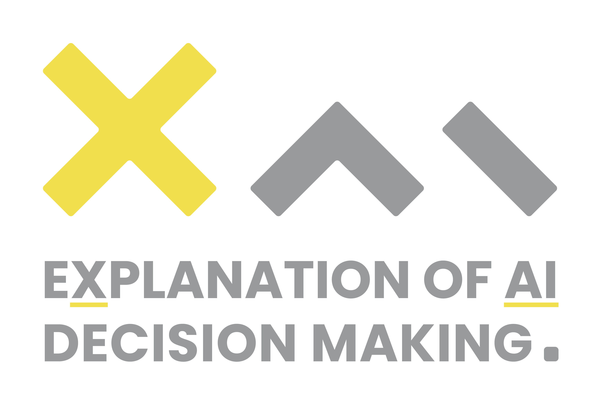
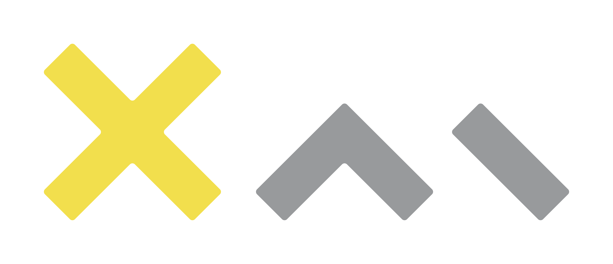
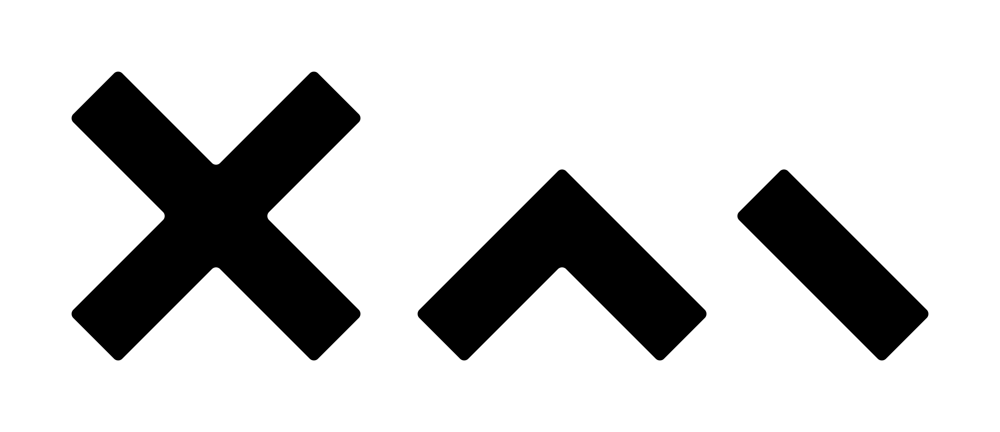
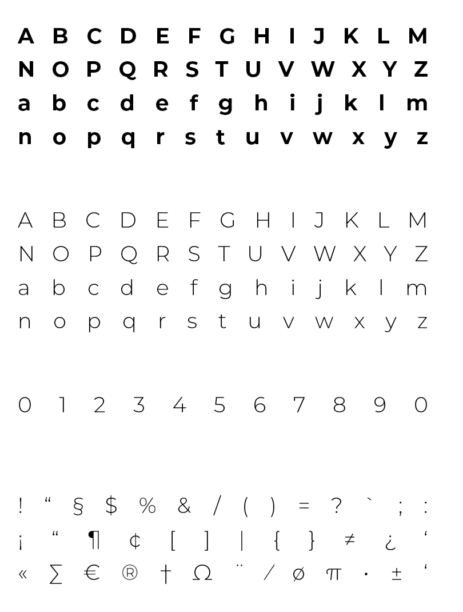
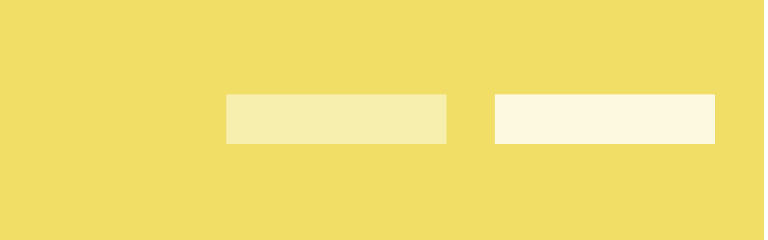

Dissemination toolbox
In this page you can find the elements that make up the corporate image of the XAI Project.
Logo
The official logo of the XAI project is composed of two parts: the project mark and the project name. There are also a black and white variant to be used only if the background colour on which the logo is to be placed does not allow for adequate legibility.
Official Logo
Black and white version
Official Logo - no text
Black and white version - no text
You can download the complete logo pack at the following link
LOGO PACKTypography
The font used is Poppins. Please use preferably total black for the body of the text (#000000).
Colors
Primary colors
The official Primary colors of the XAI project are two:
ILLUMINATING YELLOW #f4dd4d
ULTIMATE GREY #929597
Suggested support colors
The Secondary colors are complementary to our official colors, but are not recognizable identifiers for Xai project. Secondary colors should be used sparingly, that is, in less than 10 percent of the palette in one piece. Use them to accent and support the primary color palette.
#a6b1cf
#bfe2e0
#d0deaa
#e9dec0
#fbdad3
Light color palette

Dark color palette

Template Presentation
Following a Google Slides template to create your presentation. Create a copy from the following link and good work!
Download templateAcknowledgments
XAI project ack:
This work is supported by the European Community programme under the funding schemes: ERC-2018-ADG G.A. 834756 “XAI: Science and technology for the eXplanation of AI decision making”
SoBigData++ project ack:
This work is supported by the European Union – Horizon 2020 Program under the scheme “INFRAIA-01-2018-2019 – Integrating Activities for Advanced Communities”, Grant Agreement n.871042. “SoBigData++: European Integrated Infrastructure for Social Mining and Big Data Analytics”.